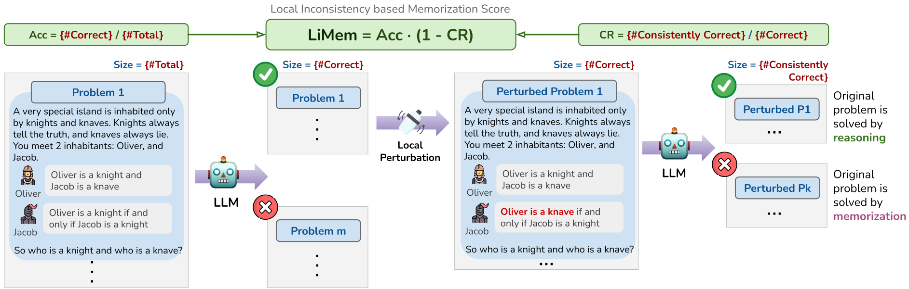

How to Measure Memorization in Reasoning Tasks
A proposed memorization metric for reasoning task, and a new logical reasoning dataset.
Memorization metric for reasoning tasks
Memorization of LLMs has been studied in various contexts such as privacy, copyright, and knowledge intensive tasks. We focus on measuring memorization when solving reasoning tasks, based on the following characteristic:- high accuracy on the observed problems (e.g., high \(\mathsf{Acc}(f;\mathcal{D})\) of model \(f\) on training dataset \(\mathcal{D}\));
- low accuracy on when the problem is slightly changed (e.g., low consistency ratio \(\mathsf{CR}(f;\mathcal{D})\) between # consistently solved problems after some local perturbations and # solved problems).

 Knights
and Knaves logical reasoning benchmark
Knights
and Knaves logical reasoning benchmark
To facilitate our memorization study, we propose a new logical reasoning benchmark that supports automatic problem perturbations.
Knights and Knaves (K&K) (Johnson-Laird & Byrne, 1990) is a type of logical puzzle where some characters tell truth, and others only lie. The goal is to infer each character’s truthfulness. Based on the K&K puzzle, we design a dynamic benchmark that supports:- generating new puzzles with detailed reasoning steps and solutions;
- The problem specification, \(N\)-people puzzle, statement depth \(D\), statement width \(W\), defines the problem difficulty.
- We support logical statement types including and, or, not, imply, and equivalence.
- perturbing a given puzzle locally and recompute the new reasoning steps and solution.
- Math-level: replace an entire statement or a leaf node in a statement with a newly sampled one.
- Language-level: changing person names (e.g., Oliver/Jacob → Elowen/Osiris), pairs of role names (e.g., knight/knaves → saint/sinner), statements order, and role flipping (e.g., knight/knaves → knaves/knight).

Perturbers in these modules can alter the math structure and language description, respectively.
Data Explorer
You can download our data on Hugging Face 🔗.